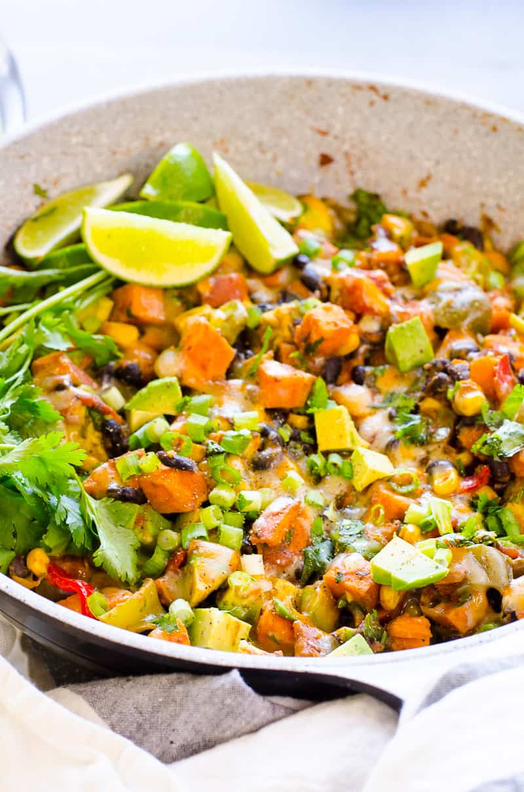

Tex Mex Skillet Recipe
Return to Home Page

Description:
Quick and easy 30 Minute Skillet Sweet Potatoes with beans, corn, fresh lime juice and melted cheese on top. To die for healthy vegetarian dinner!
The texture of this sweet potato skillet recipe – very soft. The taste – fresh. Leftovers – plenty.
Ingredients:
- 1.5 lbs Sweet Potatoes - cubed
- Black Beans - 1 Can (drained and rinsed)
- 2 medium Diced Avocados
- 1 tbsp avocado oil
- 2 large bell peppers diced
- 1 cup corn - frozen or canned
- 1 tbsp cumin
- 1/2 tbsp taco seasoning
- 3/4 tsp salt
- 1 cup 4 oz Tex Mex cheese - shredded
- 1/3 cup cilantro - chopped
- Canned Diced Tomatoes
- 1 small Onion - chopped
- Corn
- Lime Juice
- 2 Garlic Cloves minced
- Optional: 1 lb Ground Turkey
Steps:
- Cook sweet potatoes in well preheated skillet with half of the seasonings for 5 minutes. This step will ensure well seasoned creamy morsels at the end.
- Add onion, garlic and bell pepper and cook for another 3 minutes, stirring occasionally. As these veggies release a lot of water, if you add them together with potatoes they will not properly brown and become flavorful.
- Add black beans, corn, diced tomatoes and remaining spices. Bring to a boil, reduce heat to low, cover and cook for 15 minutes or until potatoes are soft. Everything will be super tender.
- Garnish with avocado, green onion, cilantro, lime juice and stir. Sprinkle with cheese, cover and let stand until cheese has melted.
Nutrition Facts:
Serving Size:1.25 cups Per Serving: Calories: 429kcal | Carbohydrates: 46g | Protein: 11g | Fat: 19g | Saturated Fat: 7g | Cholesterol: 20mg | Sodium: 592mg | Potassium: 921mg | Fiber: 12g | Sugar: 11g | Vitamin A: 17817IU | Vitamin C: 65mg | Calcium: 199mg | Iron: 2mg
Return to home page